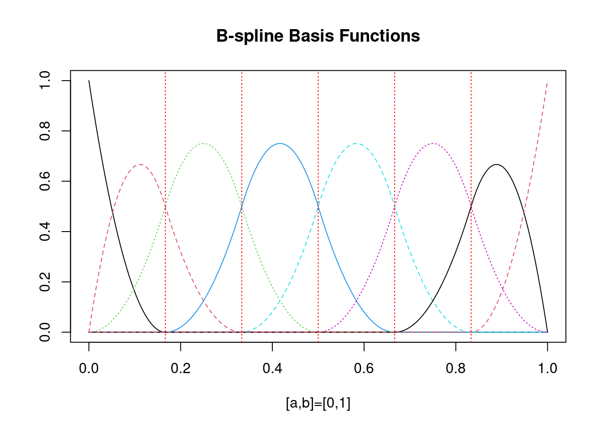
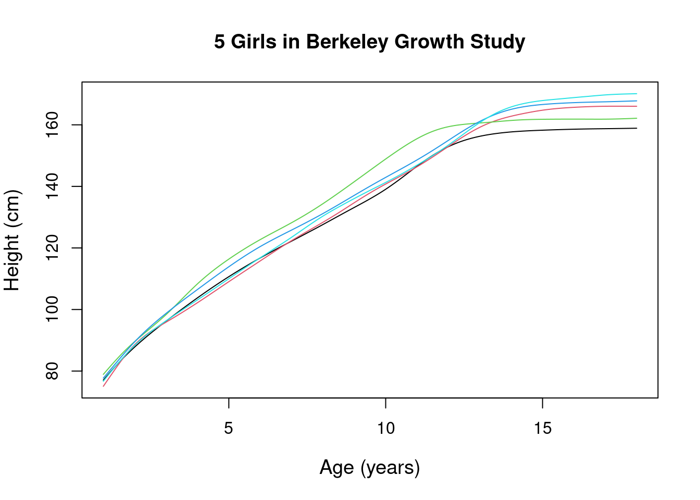
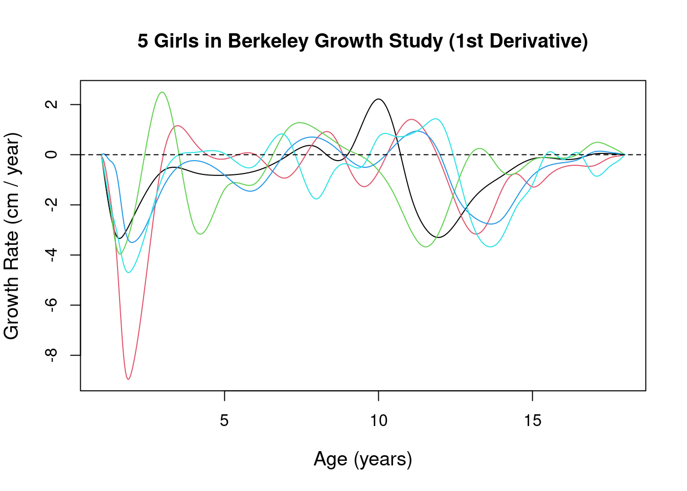
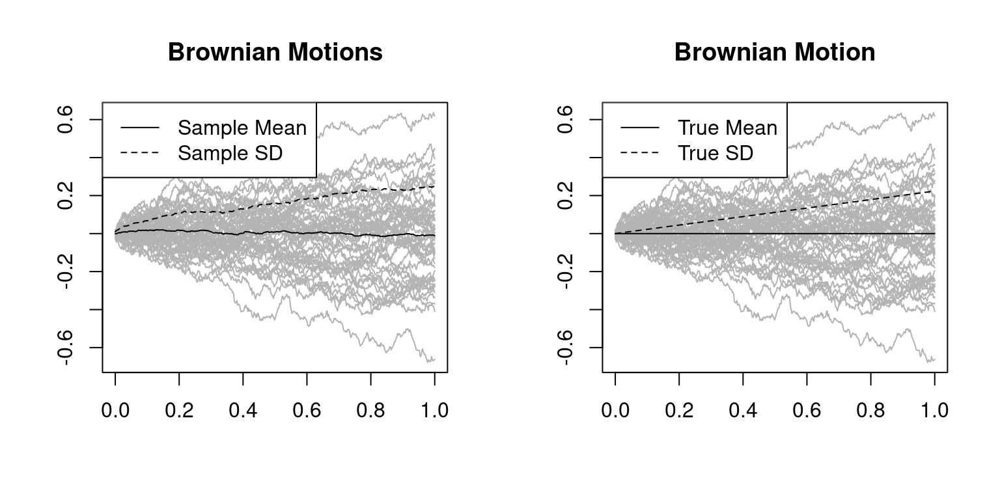
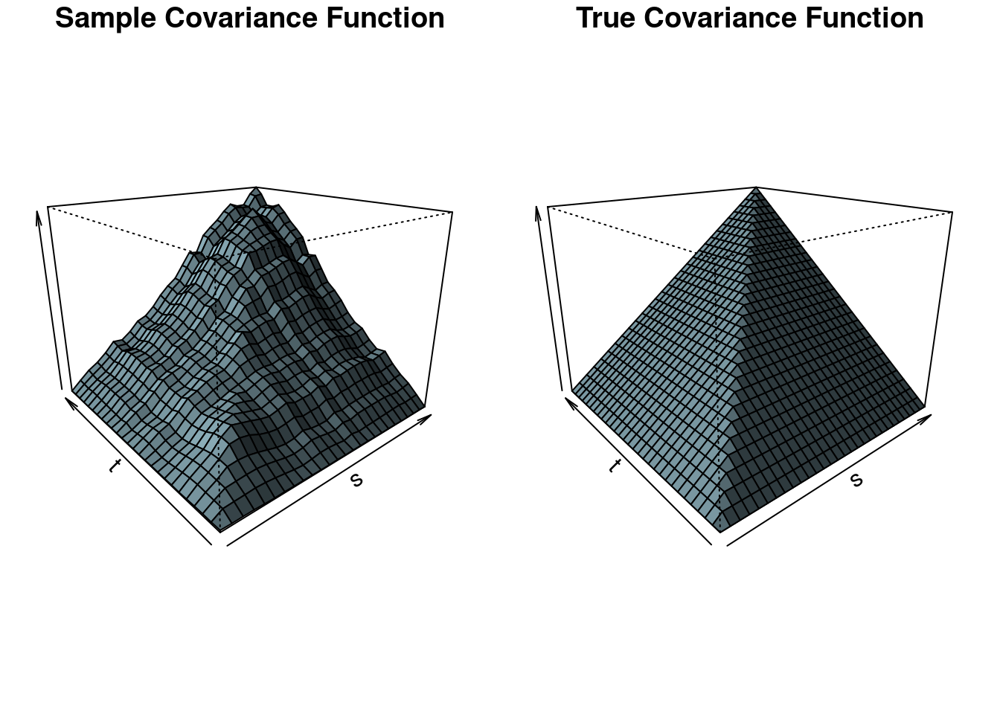

5 Functional Data Analysis
Literature:
- Main reference for this chapter:
- Introduction to Functional Data Analysis (Kokoszka and Reimherr (2017))
- Further textbooks:
R-packages used in this chapter:
## Install the fda package
install.packages("fda")
## Load the fda package
library("fda")
## Load the growth curve data (contained in the fda package)
data(growth)Functional Data Examples
Growth data (e.g. Figure 5.1) inspired the first works in functional data analysis. This type of data has very smooth trajectories and often the derivatives contain important information.

More modern works in functional data analysis also consider the case of rough sample paths; i.e. sample paths which are continuous, but not necessarily differentiable. Figure 5.2 shows data from a psychological case study.

Functional time series data are typically constructed by chopping a time series into regular sections (e.g. daily curves). Functional data methods were successfully applied to model and forecast daily electricity price curves and using the daily electricity demand curves as predictors (Figure 5.3).

Another example for functional time series are, for instance, daily PM10 (environmental data) curves (Figure 5.4).

5.1 From Raw Data to Functional Data
The simplest raw data set encountered in functional data analysis is a sample of the form: \[ \begin{align} X_i(t_j),\quad t_j\in[a,b],\quad i=1,\dots,n \quad j=1,\dots,J. \end{align} \] The theoretical objects we wish to study are smooth curves: \[ \begin{align} X_i(t),\quad t\in[a,b],\quad i=1,\dots,n \quad j=1,\dots,J.\\[4ex] \end{align} \]
par(mfrow=c(1,2), mar=c(5.1, 4.1, 2.1, 2.1))
matplot(x=growth$age, y=growth$hgtf[,1:5], type="p", lty=1, pch=21,
xlab="Age", ylab="Height (cm)", cex.lab=1.2,col=1:5,bg=1:5,
main=expression(X[i](t[j])))
matplot(x=growth$age, y=growth$hgtf[,1:5], type="l", lty=1, pch=1,
xlab="Age", ylab="Height (cm)", cex.lab=1.2,
main=expression(X[i](t)))
par(mfrow=c(1,1), mar=c(5.1, 4.1, 4.1, 2.1))
Pre-Processing the Data using Basis Expansions:
Typically, the first step in working with functional data is to express the functional data by means of a basis expansion \[ X_i(t)\approx\sum_{m=1}^M c_{im} B_m(t),\quad t\in[a,b], \] where \(B_1(t),\dots,B_M(t)\) are some standard collection of basis functions like:
- splines
- wavelets
- sine and cosine functions
- etc.
Example: B-spline basis functions \(B_1(t),\dots,B_M(t)\):
bspl_bf <- fda::create.bspline.basis(rangeval = c(0,1),
norder = 3,
breaks = seq(0,1,len=7))
plot(bspl_bf,
main = "B-spline Basis Functions",
xlab = "[a,b]=[0,1]")
Example: Fourier basis functions \(B_1(t),\dots,B_M(t)\):
fourier_bf <- fda::create.fourier.basis(rangeval = c(0,1),
nbasis = 5)
plot(fourier_bf,
main = "Fourier Basis Functions",
xlab = "[a,b]=[0,1]")
Example: Pre-processing the data of the Berkeley growth study
SmObj <- fda::smooth.basisPar(growth$age,
y = growth$hgtf[,1:5],lam=0.1)
result <- plot(SmObj$fd,
xlab = "Age (years)",
ylab = "Height (cm)", cex.lab=1.2,
main = "5 Girls in Berkeley Growth Study", lty=1)
Example: 1st derivative of the functional data from the Berkeley growth study
result <- plot(fda::deriv.fd(SmObj$fd, 1),
xlab = "Age (years)",
ylab = "Growth Rate (cm / year)", cex.lab=1.2,
main = "5 Girls in Berkeley Growth Study (1st Derivative)", lty=1)
Example: 2nd derivative of the functional data from the Berkeley growth study
result <- plot(fda::deriv.fd(SmObj$fd, 2),
xlab = "Age (years)",
ylab = "Growth Rate (cm / year)", cex.lab=1.2,
main = "5 Girls in Berkeley Growth Study (1st Derivative)", lty=1)
5.2 Sample Mean and Covariance
Pointwise mean: \[ \bar{X}_n(t)=\frac{1}{n}\sum_{i=1}^n X_i(t) \]
Pointwise standard deviation: \[ S_n(t)=\sqrt{\frac{1}{n-1}\sum_{i=1}^n\Big(X_i(t)-\bar{X}_n(t)\Big)^2} \]
Pointwise covariance function: \[ \hat{c}_n(t,s)=\frac{1}{n-1}\sum_{i=1}^n\Big(X_i(t)-\bar{X}_n(t)\Big)\Big(X_i(s)-\bar{X}_n(s)\Big) \]
The sample covariance function is extensively used in Functional Data Analysis. The interpretation of the values of \(\hat{c}_n(t,s)\) is the same as for the usual variance-covariance matrix.
Example Data: Brownian motion trajectories
set.seed(109)
n <- 50 # sample size
J <- 500 # number of evaluation points
BM.mat <- matrix(0, ncol=n, nrow=J)
for(i in 1:n){
BM.mat[,i] <- cumsum(rnorm(J, sd = 1/100))
}Computing and plotting the pointwise mean and standard deviations in R:
BM.Mean <- rowMeans(BM.mat)
BM.SD <- apply(BM.mat,1,sd)
xx <- seq(0,1,len=J)
par(mfrow=c(1,2))
matplot(x = xx,
y = BM.mat,
xlab = "", ylab = "",
type ="l",
col = gray(.7), lty=1,
main = "Brownian Motions")
lines(x = xx,
y = BM.Mean)
lines(x = xx,
y = BM.SD, lty=2)
legend("topleft", lty = c(1,2),
legend = c("Sample Mean","Sample SD"))
##
matplot(x = xx,
y = BM.mat,
xlab = "", ylab = "",
type = "l",
col = gray(.7), lty=1,
main = "Brownian Motion")
lines(x = c(0,1),
y = c(0,0), lty=1)
lines(x = c(0,1),
y = c(0,sqrt(J*(1/100)^2)), lty=2)
legend("topleft", lty = c(1,2),
legend = c("True Mean","True SD"))
Computing and plotting the pointwise covariance function in R:
BM.cov <- var(t(BM.mat))
slct <- c(seq.int(1,500,by=20),500)
par(mfrow=c(1,2), mar=c(1, 1.1, 1.2, 1.1))
persp(x = xx[slct],
y = xx[slct],
z = BM.cov[slct,slct],
xlab = "s", ylab = "t", zlab = "",
main = "Sample Covariance Function",
theta = -40, phi = 20, expand = .75, col = "lightblue", shade = 1.05)
x <- seq(0, 1, length= 30)
y <- x
f <- function(x, y){min(x,y)}
f <- Vectorize(f)
z <- outer(x, y, f)
persp(x = x, y = y, z = z, xlab="s", ylab="t", zlab="",
main = "True Covariance Function",
theta = -40, phi = 20, expand = .75, col = "lightblue", shade = 1.05)
5.3 Functional Principal Component Analysis
Principal Component Analysis (PCA) is effectively an eigendecomposition of the empirical covariance function \(\hat{c}_n(t,s)\) \[ \begin{align*} \hat{c}_n(t,s) &=\sum_{j=1}^n\hat{\lambda}_j\hat{v}_j(t)\hat{v}_j(s),\\[2ex] &\approx\sum_{j=1}^{p<n}\hat{\lambda}_j\hat{v}_j(t)\hat{v}_j(s), \end{align*} \] where \[ \hat{\lambda}_1>\hat{\lambda}_2>\dots \geq 0 \] denote the estimated eigenvalues and where \[ \hat{v}_1(t),\dots,\hat{v}_p(t) \] denote the estimated principal component (or eigen) functions.
The estimated eigenfunctions are orthonormal, i.e. \[ \int_a^b\hat{v}_j(t)\hat{v}_k(t)dt= \begin{cases} 1, & j=k \\ 0, &j\neq k. \end{cases} \]
In FDA, functional PCA is very prominent since the Estimated Functional Principal Components (EFPC’s) \(\hat{v}_j\) are very well suited as basis functions for \(X_i\): \[ \begin{align*} X_i(t) &=\bar{X}_n(t) + \sum_{j=1}^n\hat{\xi}_{ij}\hat{v}_j(t)\\[2ex] &\approx\bar{X}_n(t) + \sum_{j=1}^{p<n}\hat{\xi}_{ij}\hat{v}_j(t), \end{align*} \] where \(\hat{\xi}_{ij}\) denote the estimated scores \[ \hat{\xi}_{ij}=\int_a^b (X_i(t)-\bar{X}_n(t))\hat{v}_j(t)dt. \]
Note that \[ \frac{1}{n}\sum_{i=1}^n\hat{\xi}_{ij} = 0,\quad\text{for all }j=1,2,\dots \] and that \[ \frac{1}{n}\sum_{i=1}^n\hat{\xi}_{ij}^2 = \hat{\lambda}_j,\quad\text{for all }j=1,2,\dots \]
Example: Computing the Functional PCA in R:
BSPL.basis <- create.bspline.basis(rangeval=c(0,1), nbasis=200)
BM.fd <- smooth.basis(argvals=xx, y=BM.mat, fdParobj=BSPL.basis)
BM.pca <- pca.fd(BM.fd$fd, nharm=3)
par(mfrow=c(1,3), mar=c(2.1, 1.1, 4.1, 1.1))
persp(xx[slct], xx[slct], BM.cov[slct,slct], xlab="s", ylab="t", zlab="",
main="Sample Covariance Function", theta = -40, phi = 20, expand = .75, col = "blue", shade = 1.05)
invisible(plot(BM.pca$values[1:3], type="o", ylab="", main="Estimated Eigenvalues (p=3)"))
invisible(plot(BM.pca$harmonics, lwd=3, ylab="", main="Estimated FPC's (p=3)"))
\[ \begin{align*} Cov(X(t),X(s)) = c(t,s) &=\sum_{j=1}^n \lambda_j v_j(t) v_j(s),\\[2ex] &\approx\sum_{j=1}^{p<n} \lambda_j v_j(t) v_j(s), \end{align*} \] where \[ \lambda_1 > \lambda_2>\dots \geq 0 \] denote the true eigenvalues and where \[ v_1(t),\dots,v_p(t) \] denote the true principal component (or eigen) functions.
The eigenfunctions are orthonormal, i.e. \[ \int_a^b v_j(t)v_k(t)dt= \begin{cases} 1, & j=k \\ 0, &j\neq k. \end{cases} \]
Eigenfunctions as basis functions \[ \begin{align*} X_i(t) &=\mathbb{E}(X(t)) + \sum_{j=1}^n \xi_{ij}v_j(t)\\[2ex] &\approx\mathbb{E}(X(t)) + \sum_{j=1}^{p<n}\xi_{ij}v_j(t), \end{align*} \] where \(\xi_{ij}\) denote the true scores \[ \xi_{ij}=\int_a^b (X_i(t)-\mathbb{E}(X(t)) )v_j(t)dt. \]
Note that \[ \mathbb{E}(\xi_{ij}) = 0,\quad\text{for all }j=1,2,\dots \] and that \[ Var(\xi_{ij}) = \lambda_j,\quad\text{for all }j=1,2,\dots. \]
Best basis property: The EFPC’s are the best basis; i.e. they have the smallest approximation error (in the mean square sense).
\[ \begin{align} X_i(t)&\approx\bar{X}_n(t) + \sum_{j=1}^p\hat{\xi}_{ij}\hat{v}_j(t) \end{align} \]